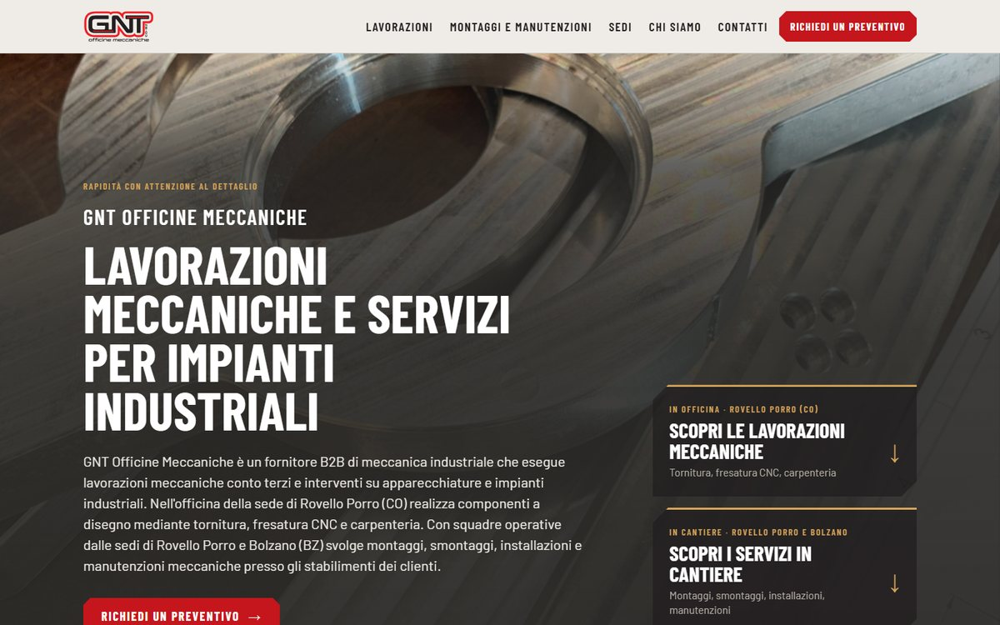
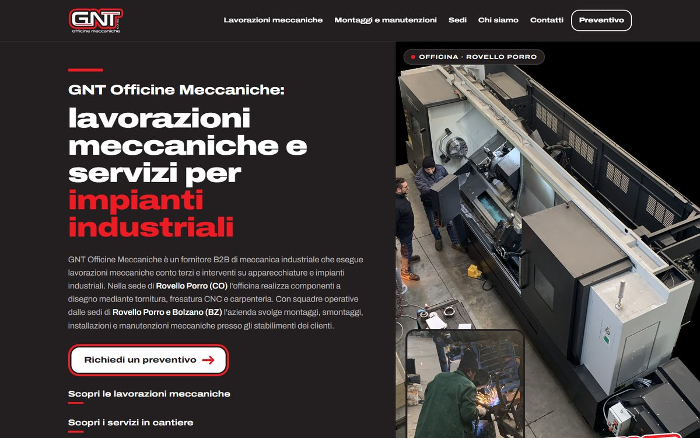
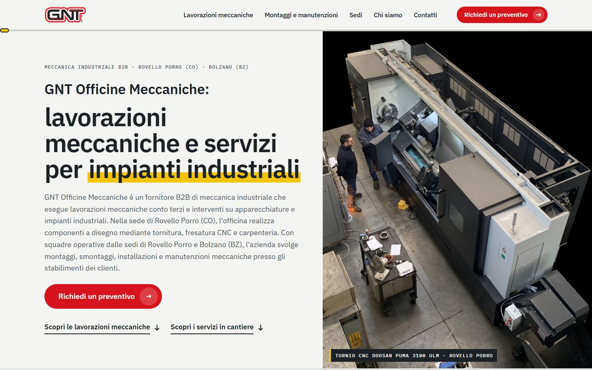
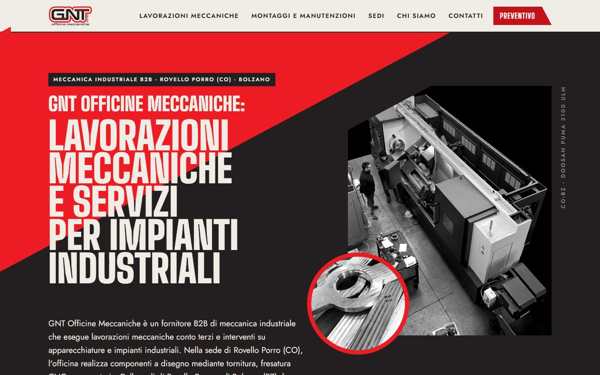

-

Materia
Le foto vere dell'officina parlano per prime, su colori caldi di cemento, acciaio e bronzo.
Apri la versione -

Contorno
Il logo di GNT Officine Meccaniche diventa la grammatica del sito: nero, rosso e titoli larghi e decisi.
Apri la versione -

Linea di produzione
Il sito come una linea di lavorazione: scorrendo, il pezzo avanza di stazione in stazione.
Apri la versione -

Costruttivista
Diagonali, cuneo rosso e fotomontaggio: la linea tra Rovello Porro e Bolzano diventa geometria.
Apri la versione
Anteprima della nuova homepage
Qui trovi quattro proposte di design per la homepage del nuovo sito. Apri ogni versione e navigala fino in fondo, prima su computer e poi su telefono: così puoi confrontarle e scegliere quella che senti più vicina all'azienda.